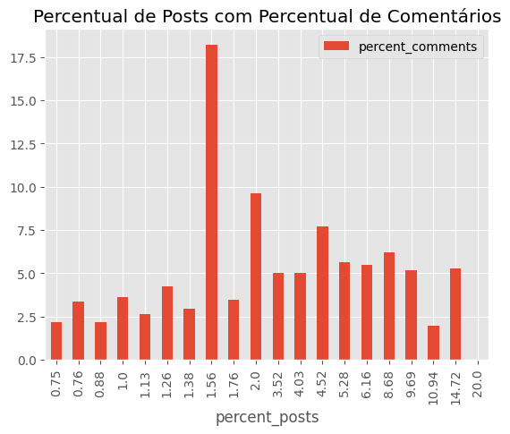
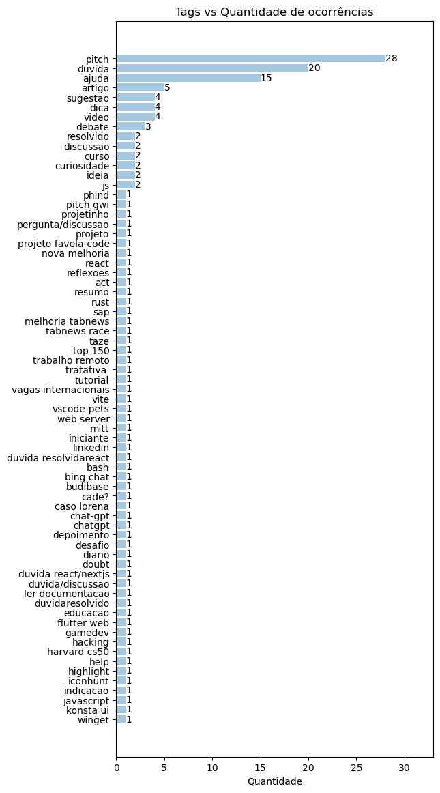
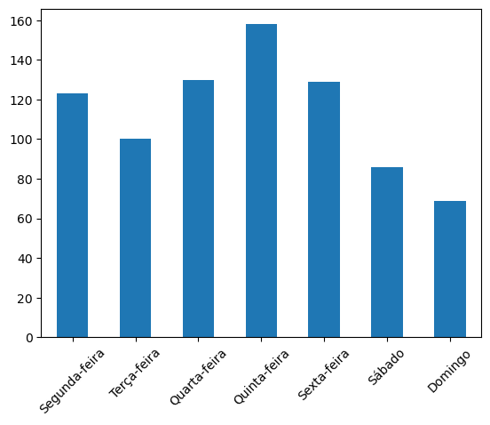
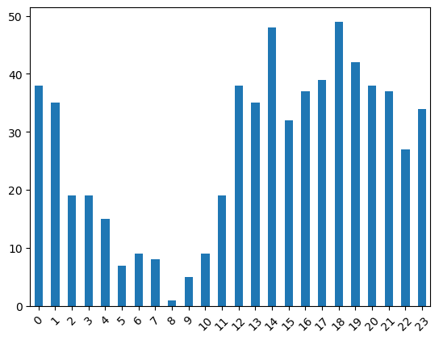

Análise de conteúdo tabnews (fevereiro de 2023)
Há um tempo descobri o site tabnews, uma espécie de agregador de notícias/rede social focada em tópicos de programação e tecnologia. É uma iniciativa do filipe deschamps, mas está sendo desenvolvido de forma comunitária através do seu repositório do github.
Dando uma explorada nos conteúdos reparei que as postagens costumam focar em tópicos como estudos e aprendizagem, busca de empregos, uso de inteligência artifical, projetos pessoais e notícias de tecnologia no geral.
Fiquei curioso sobre quais assuntos são mais populares e quais outros insights podemos ter sobre o conteúdo publicado na plataforma, então decidi fazer um levantamento dos dados existentes, visto que a API é aberta ao público :).
Optei por restringir a análise ao mês de fevereiro de 2023, onde o conjunto de dados é recente, mas não tem um tamanho que dificulte a manipulação.
Você pode acessar o código completo neste notebook do kaggle.
Coleta de dados no intervalo 02/2023 até 03/2023
Existe um post de referência como documentação da API. Usando ele como base, e tentando interpretar o código fonte dos endpoints, descobri o seguinte:
- A URL base para listar as postagens é https://www.tabnews.com.br/api/v1/contents;
- Os posts podem ser ordenados de acordo com três estratégias: "new", "old" e "relevant"
- "new" aplica um
ORDER BY published_at DESC: mostra os posts mais recentes primeiro; - "old" aplica um
ORDER BY published_at ASC: mostra os posts mais antigos primeiro; - "relevant" aplica um critério um pouco mais complexo, levando em conta o tempo de existência do post, o número de tabcoins (tipo um upvote da plataforma) e algumas outras regrinhas(ver
getContentScore);
- "new" aplica um
- O máximo de postagens retornadas por vez é 100;
- Não existe um filtro específico por data;
- Existem alguns cabeçalhos (
X-Pagination-Total-RowseLink) que auxiliam na navegação; - Existe um endpoint que retorna o número de postagens por dia num intervalo de 2 meses da data atual;
Vamos verificar o formato de um request básico, passando new como estratégia de ordenação.
$ curl -I "https://www.tabnews.com.br/api/v1/contents?strategy=new"
HTTP/2 200
...
..
link: <https://www.tabnews.com.br/api/v1/contents?strategy=new&page=1&per_page=1>; rel="first", <https://www.tabnews.com.br/api/v1/contents?strategy=new&page=2&per_page=1>; rel="next", <https://www.tabnews.com.br/api/v1/contents?strategy=new&page=8153&per_page=1>; rel="last"
x-pagination-total-rows: 8153
...
..
De acordo com o cabeçalho x-pagination-total-rows, temos um total de 8153 postagens. Podemos combinar essa informação com o número de posts por dia para descobrir quando começam os posts de fevereiro de 2023.
$ curl https://www.tabnews.com.br/api/v1/analytics/root-content-published
[
{"date":"13/01","conteudos":38},
{"date":"14/01","conteudos":29},
{"date":"15/01","conteudos":30},
{"date":"16/01","conteudos":50},
{"date":"17/01","conteudos":37},
{"date":"18/01","conteudos":44},
..
]
Podemos roubar aqui e selecionar apenas os valores partindo de 01/02, para somá-los com um filtro.
$ echo '[{"date":"01/02","conteudos":46},{"date":"02/02","conteudos":66},{"date":"03/02","conteudos":43},{"date":"04/02","conteudos":43},{"date":"05/02","conteudos":31},{"date":"06/02","conteudos":55},{"date":"07/02","conteudos":51},{"date":"08/02","conteudos":46},{"date":"09/02","conteudos":47},{"date":"10/02","conteudos":39},{"date":"11/02","conteudos":18},{"date":"12/02","conteudos":19},{"date":"13/02","conteudos":40},{"date":"14/02","conteudos":29},{"date":"15/02","conteudos":45},{"date":"16/02","conteudos":54},{"date":"17/02","conteudos":48},{"date":"18/02","conteudos":21},{"date":"19/02","conteudos":18},{"date":"20/02","conteudos":27},{"date":"21/02","conteudos":27},{"date":"22/02","conteudos":37},{"date":"23/02","conteudos":38},{"date":"24/02","conteudos":41},{"date":"25/02","conteudos":10},{"date":"26/02","conteudos":13},{"date":"27/02","conteudos":51},{"date":"28/02","conteudos":38},{"date":"01/03","conteudos":21},{"date":"02/03","conteudos":35},{"date":"03/03","conteudos":35},{"date":"04/03","conteudos":21},{"date":"05/03","conteudos":15},{"date":"06/03","conteudos":28},{"date":"07/03","conteudos":27},{"date":"08/03","conteudos":40},{"date":"09/03","conteudos":37},{"date":"10/03","conteudos":31},{"date":"11/03","conteudos":29},{"date":"12/03","conteudos":23},{"date":"13/03","conteudos":34}]' \
| jq "[.[].conteudos] | add"
1417
1417! Esse é o número de postagens criadas des do início de fevereiro, até o dia atual.
1417 postagens / 100 posts por página ≈ 14 páginas: iniciamos as requisições na página 68 (82-14), onde deve estar o primeiro post de fevereiro, e vamos avançando até chegar no dia 28.
Automatizando o processo
Um script em python vai nos ajudar a salvar os dados pra consulta futura.
A lógica é simples: fazer requisições na API partindo da página 68, salvando os resultados, e indo para a próxima página até atingirmos o primeiro post datado de março.
request_loop = True # variável que define se devemos seguir para a próxima página
february_posts = [] # lista que vai segurar todas as postagens
base_url = "https://www.tabnews.com.br/api/v1"
current_page = 68 # variável que segura o valor da página atual
while request_loop:
# concatenamos a url atual baseada no valor da página atual
request_url = f"{base_url}/contents?strategy=old&page={current_page}&per_page=100"
r = requests.get(request_url)
posts = r.json()
for post in posts:
# caso o post atual for de antes de fevereiro, passamos para o próximo
if published_before_february(post):
continue
# caso o post atual tiver a data de publicação maior que fevereiro
# chegou a hora de parar nossa busca!
if published_after_february(post):
request_loop = False
break
february_posts.append(post)
# incrementamos o contador, indo para a próxima página
current_page = current_page + 1
sleep(1) # damos uma segurada pra não abusar do servidor :')
with open("february.json", "w") as outfile:
json.dump(february_posts, outfile)
O código acima vai ir de página em página (com 100 posts por página), partindo da 68 e aumentando sempre, até chegarmos no primeiro post de março. Nesse momento o loop acaba (a variável request_loop se torna False), e nós salvamos os posts no arquivo february_posts.json.
As funções published_before_february e published_after_february verificam se a data de publicação é anterior ou posterior a fevereiro, respectivamente:
def published_before_february(request_body):
"""Returns whether the given post was `published_at` before 01/02/2023"""
published_at = dt.strptime(request_body["published_at"], "%Y-%m-%dT%H:%M:%S.%fZ")
return dt.strptime("2023-02-01", "%Y-%m-%d") > published_at
def published_after_february(request_body):
"""Returns whether the given post was `published_at` after 28/02/2023"""
published_at = dt.strptime(request_body["published_at"], "%Y-%m-%dT%H:%M:%S.%fZ")
return published_at > dt.strptime("2023-02-28T23:59:59", "%Y-%m-%dT%H:%M:%S")
Com isso, vamos acumular todos os posts do mês de fevereiro para iniciar nossa análise.
Clique aqui para visualizar o script inteiro (40 linhas, ❤️ python)
import json
import requests
from datetime import datetime as dt
from time import sleep
def published_before_february(request_body):
"""Returns whether the given post was `published_at` before 01/02/2023"""
published_at = dt.strptime(request_body["published_at"], "%Y-%m-%dT%H:%M:%S.%fZ")
return dt.strptime("2023-02-01", "%Y-%m-%d") > published_at
def published_after_february(request_body):
"""Returns whether the given post was `published_at` after 28/02/2023"""
published_at = dt.strptime(request_body["published_at"], "%Y-%m-%dT%H:%M:%S.%fZ")
return published_at > dt.strptime("2023-02-28T23:59:59", "%Y-%m-%dT%H:%M:%S")
base_url = "https://www.tabnews.com.br/api/v1"
current_page = 68
request_loop = True
february_posts = []
while request_loop:
request_url = f"{base_url}/contents?strategy=old&page={current_page}&per_page=100"
r = requests.get(request_url)
posts = r.json()
for post in posts:
if published_before_february(post):
continue
if published_after_february(post):
request_loop = False
break
february_posts.append(post)
current_page = current_page + 1
sleep(1) # prevent abuse :')
with open("february.json", "w") as outfile:
json.dump(february_posts, outfile)
Análises iniciais
Vamos começar carregando o arquivo json como um dataframe.
df = pd.read_json("./february.json")
Com isso, podemos pegar algumas informações básicas.
$ df.shape
(935, 14)
Foram publicados 935 posts em fevereiro.
df.head()
| id | owner_id | parent_id | slug | title | status | source_url | created_at | updated_at | published_at | deleted_at | owner_username | tabcoins | children_deep_count | |
|---|---|---|---|---|---|---|---|---|---|---|---|---|---|---|
| 0 | 6190e4fe-4aa3-4557-b69a-f42ac8765715 | 6e750ada-d106-4a6f-bd1e-c4c5a9d3b7f6 | NaN | imersao-dev-aula-1-expandindo-os-conhecimentos | Imersão Dev - Aula 1 | Expandindo os Conhecime... | published | None | 2023-02-01 00:14:05.031000+00:00 | 2023-02-01 00:14:23.724000+00:00 | 2023-02-01 00:14:05.054000+00:00 | NaT | TheDevick | 1 | 2 |
| 1 | c2347a33-28dd-4c03-9127-012d9b61cd82 | f6b5df28-4810-4f94-a523-53be17fffbc6 | NaN | desenvolvedor-react-em-inicio-de-carreira | Desenvolvedor React em início de carreira | published | None | 2023-02-01 00:24:06.513000+00:00 | 2023-02-01 00:24:06.513000+00:00 | 2023-02-01 00:24:06.537000+00:00 | NaT | kevensouzz | 1 | 4 |
| 2 | 447f4db9-9570-4b29-bce5-48c3195879e1 | c8a4bd72-1edd-4ca4-96b6-0310d0f53457 | NaN | 10-dicas-simples-para-melhorar-como-programado... | 10 dicas simples para melhorar como programado... | published | None | 2023-02-01 00:45:36.751000+00:00 | 2023-02-01 00:49:18.821000+00:00 | 2023-02-01 00:45:36.761000+00:00 | NaT | roneydc | 1 | 0 |
| 3 | 6c0744af-c140-4915-ac3c-d73cc0e53f9a | c8a4bd72-1edd-4ca4-96b6-0310d0f53457 | NaN | vamos-falar-sobre-linguangem-orientadas-a-objetos | 1 - Vamos falar sobre linguangem orientada a o... | published | None | 2023-02-01 00:56:42.619000+00:00 | 2023-02-01 01:08:07.698000+00:00 | 2023-02-01 00:56:42.643000+00:00 | NaT | roneydc | -1 | 2 |
| 4 | 05a8f1e2-4bc5-4a9f-861b-8fcb64e8689f | c8a4bd72-1edd-4ca4-96b6-0310d0f53457 | NaN | 2-um-pequeno-exemplo-de-orientacao-a-objeto-py... | 2 - Um pequeno exemplo de orientação a objeto ... | published | None | 2023-02-01 01:07:57.037000+00:00 | 2023-02-01 01:07:57.037000+00:00 | 2023-02-01 01:07:57.051000+00:00 | NaT | roneydc | 0 | 0 |
Limpando os dados
Existe uma conta, NewsletterOficial que faz postagens regulares de notícias de outros sites. Como a ideia é entender o relacionamento entre usuários, vamos remover os posts da Newsletter do nosso dataset.
df = df.query('owner_username != "NewsletterOficial"')
Para facilitar a identificação, vamos remover algumas colunas que não são de interesse (id, owner_id, parent_id, status, created_at, updated_at, deleted_at).
df = df[[
#'id',
#'owner_id',
#'parent_id',
'slug',
'title',
#'status',
'source_url',
#'created_at',
#'updated_at',
'published_at',
#'deleted_at',
'owner_username',
'tabcoins',
'children_deep_count'
]]
Vamos aproveitar pra renomear a coluna "children_deep_count" para "comments" e a coluna "owner_username" para "username".
df = df.rename(
columns={
'children_deep_count':'comments',
'owner_username': 'username'
}
)
Vamos puxar uma descrição básica do nosso dataset:
df.describe()
| parent_id | tabcoins | comments | |
|---|---|---|---|
| count | 0.0 | 795.000000 | 795.000000 |
| mean | NaN | 3.373585 | 5.596226 |
| std | NaN | 7.522933 | 13.093704 |
| min | NaN | -12.000000 | 0.000000 |
| 25% | NaN | 1.000000 | 1.000000 |
| 50% | NaN | 1.000000 | 3.000000 |
| 75% | NaN | 3.000000 | 6.000000 |
| max | NaN | 82.000000 | 301.000000 |
Nos restam 795 posts criados por usuários normais.
A metade das postagens (50%) não atinge mais de três comentário.
Três quartos das postagens (75%) não atinge 3 tabcoins! Levando em conta que todo post "nasce" com 1 tabcoin, a vaca tá magra.
Vamos descobrir o valor total de comentários realizados e o total de tabcoins recebidos pelas postagens do mês.
$ print(f"Total de tabcoins recebidos: {df['tabcoins'].sum()}\nTotal de comentários realizados: {df['comments'].sum()}")
Total de tabcoins recebidos: 2682
Total de comentários realizados: 4449
Distribuição de comentários
Quantos posts tiveram pelo menos um comentário?
$ df.query('comments > 0')['comments'].count()
636
80% das postagens receberam ao menos um comentário!
Qual a distribuição de comentários por post?
comments_distrib = pd.DataFrame(
df.groupby(['comments'])['comments'] \
.count()
).rename(columns={"comments": "num_posts"}) \
.reset_index()
Vamos agrupar nosso dataset pelo número de comentários, e verificar o percentual de cada um em relação ao número total de postagens.
comments_distrib['percent_posts'] = (comments_distrib['num_posts'] / 795) * 100
Outra relação interessante é quantos % dos comentários do site se encontram nesses posts.
Por exemplo, quantos porcento dos comentários totais foram feitos em posts com 2, 3 ou 5 comentários?
comments_distrib['percent_comments'] = ((comments_distrib['comments'] * comments_distrib['num_posts']) / 4449) * 100
Vamos adicionar também um contador com o total de comentários pra cada número de comentários.
comments_distrib['total_comments'] = comments_distrib['num_posts'] * comments_distrib['comments']
Vamos usar uma função para formatar os valores percentuais com duas casas decimais.
def format_two_decimals(x):
return float("%.2f" % x);
comments_distrib['percent_posts'] = comments_distrib['percent_posts'].apply(format_two_decimals)
comments_distrib['percent_comments'] = comments_distrib['percent_comments'].apply(format_two_decimals)
| comments | num_posts | total_comments | percent_posts | percent_comments | |
|---|---|---|---|---|---|
| 41 | 301 | 1 | 301 | 0.13 | 6.77 |
| 4 | 4 | 69 | 276 | 8.68 | 6.20 |
| 6 | 6 | 42 | 252 | 5.28 | 5.66 |
| 5 | 5 | 49 | 245 | 6.16 | 5.51 |
| 2 | 2 | 117 | 234 | 14.72 | 5.26 |
| 3 | 3 | 77 | 231 | 9.69 | 5.19 |
| 7 | 7 | 32 | 224 | 4.03 | 5.03 |
| 8 | 8 | 28 | 224 | 3.52 | 5.03 |
| 10 | 10 | 18 | 180 | 2.26 | 4.05 |
| 9 | 9 | 18 | 162 | 2.26 | 3.64 |
| 11 | 11 | 14 | 154 | 1.76 | 3.46 |
| 12 | 12 | 11 | 132 | 1.38 | 2.97 |
| 13 | 13 | 9 | 117 | 1.13 | 2.63 |
| 25 | 25 | 4 | 100 | 0.50 | 2.25 |
| 20 | 20 | 5 | 100 | 0.63 | 2.25 |
| 14 | 14 | 7 | 98 | 0.88 | 2.20 |
| 16 | 16 | 6 | 96 | 0.75 | 2.16 |
| 18 | 18 | 5 | 90 | 0.63 | 2.02 |
| 1 | 1 | 87 | 87 | 10.94 | 1.96 |
| 40 | 84 | 1 | 84 | 0.13 | 1.89 |
| 26 | 26 | 3 | 78 | 0.38 | 1.75 |
| 39 | 76 | 1 | 76 | 0.13 | 1.71 |
| 33 | 36 | 2 | 72 | 0.25 | 1.62 |
| 24 | 24 | 3 | 72 | 0.38 | 1.62 |
| 38 | 71 | 1 | 71 | 0.13 | 1.60 |
| 32 | 35 | 2 | 70 | 0.25 | 1.57 |
| 31 | 32 | 2 | 64 | 0.25 | 1.44 |
| 29 | 30 | 2 | 60 | 0.25 | 1.35 |
| 15 | 15 | 4 | 60 | 0.50 | 1.35 |
| 23 | 23 | 2 | 46 | 0.25 | 1.03 |
| 22 | 22 | 2 | 44 | 0.25 | 0.99 |
| 37 | 44 | 1 | 44 | 0.13 | 0.99 |
| 36 | 43 | 1 | 43 | 0.13 | 0.97 |
| 35 | 42 | 1 | 42 | 0.13 | 0.94 |
| 34 | 41 | 1 | 41 | 0.13 | 0.92 |
| 19 | 19 | 2 | 38 | 0.25 | 0.85 |
| 17 | 17 | 2 | 34 | 0.25 | 0.76 |
| 30 | 31 | 1 | 31 | 0.13 | 0.70 |
| 28 | 28 | 1 | 28 | 0.13 | 0.63 |
| 27 | 27 | 1 | 27 | 0.13 | 0.61 |
| 21 | 21 | 1 | 21 | 0.13 | 0.47 |
| 0 | 0 | 159 | 0 | 20.00 | 0.00 |
Existe uma grande concentração de comentários em poucos posts. Se ordenarmos pelo número de comentários por post, os que possuem maior número de comentário tem baixa ocorrência (como é de se esperar).
comments_distrib.sort_values(by=['comments'], ascending=False).head(10)
| comments | num_posts | total_comments | percent_posts | percent_comments | |
|---|---|---|---|---|---|
| 41 | 301 | 1 | 301 | 0.13 | 6.77 |
| 40 | 84 | 1 | 84 | 0.13 | 1.89 |
| 39 | 76 | 1 | 76 | 0.13 | 1.71 |
| 38 | 71 | 1 | 71 | 0.13 | 1.60 |
| 37 | 44 | 1 | 44 | 0.13 | 0.99 |
| 36 | 43 | 1 | 43 | 0.13 | 0.97 |
| 35 | 42 | 1 | 42 | 0.13 | 0.94 |
| 34 | 41 | 1 | 41 | 0.13 | 0.92 |
| 33 | 36 | 2 | 72 | 0.25 | 1.62 |
| 32 | 35 | 2 | 70 | 0.25 | 1.57 |
Podemos agrupar pelo número de ocorrências (num_posts) para entender como esses posts populares impactam no conteúdo produzido pela plataforma.
comments_by_num_posts = comments_distrib.groupby('num_posts') \
.agg(
{
'num_posts': 'sum',
'percent_posts': 'sum',
'percent_comments': 'sum',
'comments': 'sum',
'total_comments': 'sum',
}
) \
.rename(columns={'num_posts': 'total_posts'}) \
.reset_index(drop=False) \
.sort_values(by=['comments'], ascending=False)
print(comments_by_num_posts)
| num_posts | total_posts | percent_posts | percent_comments | comments | total_comments | |
|---|---|---|---|---|---|---|
| 0 | 1 | 12 | 1.56 | 18.20 | 809 | 809 |
| 1 | 2 | 16 | 2.00 | 9.61 | 214 | 428 |
| 2 | 3 | 6 | 0.76 | 3.37 | 50 | 150 |
| 3 | 4 | 8 | 1.00 | 3.60 | 40 | 160 |
| 4 | 5 | 10 | 1.26 | 4.27 | 38 | 190 |
| 10 | 18 | 36 | 4.52 | 7.69 | 19 | 342 |
| 5 | 6 | 6 | 0.75 | 2.16 | 16 | 96 |
| 6 | 7 | 7 | 0.88 | 2.20 | 14 | 98 |
| 7 | 9 | 9 | 1.13 | 2.63 | 13 | 117 |
| 8 | 11 | 11 | 1.38 | 2.97 | 12 | 132 |
| 9 | 14 | 14 | 1.76 | 3.46 | 11 | 154 |
| 11 | 28 | 28 | 3.52 | 5.03 | 8 | 224 |
| 12 | 32 | 32 | 4.03 | 5.03 | 7 | 224 |
| 13 | 42 | 42 | 5.28 | 5.66 | 6 | 252 |
| 14 | 49 | 49 | 6.16 | 5.51 | 5 | 245 |
| 15 | 69 | 69 | 8.68 | 6.20 | 4 | 276 |
| 16 | 77 | 77 | 9.69 | 5.19 | 3 | 231 |
| 18 | 117 | 117 | 14.72 | 5.26 | 2 | 234 |
| 17 | 87 | 87 | 10.94 | 1.96 | 1 | 87 |
| 19 | 159 | 159 | 20.00 | 0.00 | 0 | 0 |
Podemos ver que 18.2% dos comentários ficaram acumulados em menos de 2% das postagens.
Esse acumulo de comentários pode ser visualizado plotando o percentual de posts pelo percentual de comentários.
comments_by_num_posts.sort_values(by=['percent_posts']).plot(kind='bar', x='percent_posts', y='percent_comments', title='Percentual de Posts vs Percentual de Comentários')
plt.show()

Encontrando tags nas postagens
O Tabnews utiliza um sistema onde o pessoal taggeia seus posts manualmente, usando colchetes ou categoria: título do post.
Quais foram as tags mais utilizadas?
Vamos iterar sobre os posts e criar uma nova coluna "tags" extraindo os valores dos títulos que estiverem nos dois formatos listados acima.
def find_tags(row):
title = row['title']
has_tag = re.search("^.*:", title)
has_colchete_tags = re.search("\[.*\]", title)
if has_tag:
return has_tag.group(0)
elif has_colchete_tags:
return has_colchete_tags.group(0)
return ""
df['tags'] = df.apply(find_tags, axis=1)
df.query('tags != ""')[['title', 'tags']]
| title | tags | |
|---|---|---|
| 8 | Ler documentação: como isso me ajudou a progra... | Ler documentação: |
| 11 | [DICA] Tabela de nomes curtos para variáveis l... | [DICA] |
| 12 | Compreendendo o CSS: A Linguagem de estilo par... | Compreendendo o CSS: |
| 24 | [Ajuda] Api para finança eur/usd | [Ajuda] |
| 26 | [JS] Problema ao movimentar o jogador pelo <ca... | [JS] |
| ... | ... | ... |
| 909 | Pitch: Como eu e meu colega de time estamos es... | Pitch: |
| 921 | Abordagem de humor, mas crítica, sobre a adoçã... | [Vídeo] |
| 922 | O chatbot que nunca entende: como depurar um m... | O chatbot que nunca entende: |
| 925 | Konsta UI: replicação "Pixel Perfect" de iOS e... | Konsta UI: |
| 929 | Redis vs. outros bancos de dados NoSQL: Prós e... | Redis vs. outros bancos de dados NoSQL: |
201 rows x 2 columns
201 posts parecem ter algum tipo de tag no título.
Parece que muitos usuários usam os dois pontos (:) sem o intuito de tag.
Vamos limpar as tags encontradas e verificar se existe algum padrão.
Pra isso, instalamos o pacote unidecode, que remove acentos, cedilhas e outros caracteres especiaisporpadrão.
!pip install unidecode --quiet
from unidecode import unidecode
Depois, vamos aplicar mais um filtro na coluna tags.
# remover acentos, símbolos e mesclar minusculas com maíusculas
def strip_func(row):
tags = row['tags']
if tags == "":
return tags
rm_symbols = [',', '!', '.', ';', '[', ']', ':']
tags = unidecode(tags).lower()
return tags.translate({ord(x): '' for x in rm_symbols})
df['tags'] = df.apply(strip_func, axis=1)
Algumas tags parecem populares:
df.query('tags != ""') \
.groupby('tags') \
.count() \
.sort_values(
by=['title'],
ascending=False
) \
.head(10)
| slug | title | source_url | published_at | username | tabcoins | comments | |
|---|---|---|---|---|---|---|---|
| tags | |||||||
| pitch | 28 | 28 | 6 | 28 | 28 | 28 | 28 |
| duvida | 20 | 20 | 1 | 20 | 20 | 20 | 20 |
| ajuda | 15 | 15 | 1 | 15 | 15 | 15 | 15 |
| artigo | 5 | 5 | 1 | 5 | 5 | 5 | 5 |
| dica | 4 | 4 | 0 | 4 | 4 | 4 | 4 |
| sugestao | 4 | 4 | 0 | 4 | 4 | 4 | 4 |
| video | 4 | 4 | 0 | 4 | 4 | 4 | 4 |
| blog do seu ze | 3 | 3 | 0 | 3 | 3 | 3 | 3 |
| debate | 3 | 3 | 0 | 3 | 3 | 3 | 3 |
| ideia | 2 | 2 | 0 | 2 | 2 | 2 | 2 |
Vamos entender o tamanho médio das tags, em número de palavras, para aprimorar nosso filtro.
def get_tag_word_size(row):
tags = row['tags']
if tags == "":
return 0
return len(tags.split(" "))
df['tag_word_size'] = df.apply(get_tag_word_size, axis=1)
df.query('tags != ""').describe()
| tabcoins | comments | tag_word_size | |
|---|---|---|---|
| count | 201.000000 | 201.000000 | 201.000000 |
| mean | 3.706468 | 6.726368 | 2.084577 |
| std | 8.486955 | 22.174078 | 2.246733 |
| min | -5.000000 | 0.000000 | 1.000000 |
| 25% | 1.000000 | 1.000000 | 1.000000 |
| 50% | 1.000000 | 4.000000 | 1.000000 |
| 75% | 3.000000 | 6.000000 | 3.000000 |
| max | 82.000000 | 301.000000 | 16.000000 |
2 palavras parece ser um bom ponto de corte, visto que 50% das tags encontradas se encaixa nesse valor.
plot_data = df.query('tags != "" and tag_word_size > 0 and tag_word_size <= 2') \
.groupby('tags') \
.count() \
.reset_index() \
.sort_values(
by=['title'],
ascending=False
)
Visualização de tags em gráfico de barras
Uma forma boa de visualizar essa distribuição é com um gráfico de barras horizontal.
%matplotlib inline
tags = plot_data['tags']
count = plot_data['title']
y_pos = np.arange(len(count))
fig = plt.figure(figsize=(6,14))
ax = fig.add_subplot()
hbars = ax.barh(y_pos, count, align='center',alpha=0.4)
ax.set_yticks(y_pos, labels=tags)
ax.invert_yaxis() # labels read top-to-bottom
ax.set_xlabel('Quantidade')
ax.set_title('Tags vs Quantidade de ocorrências')
ax.bar_label(hbars)
ax.set_xlim(right=max(count) +5)
plt.show()

O gráfico nos dá uma boa visão geral da distribuição, mas como muitas tags aparecem uma única vez, e poucas tags aparecem muitas vezes, uma visão espacial pode nos dar um insight melhor sobre a frequência do seu uso.
Vamos gerar duas wordclouds: uma com apenas tags de uma palavra e, na segunda, vamos permitir tags de até duas palavras.
Wordcloud com tags de uma única palavra
Vamos alimentar as tags existentes, filtrando as que possuem uma única palavra.
from wordcloud import WordCloud, STOPWORDS
A lib wordcloud espera uma string contendo a totalidade das palavras, e usa o espaço como delimitador.
text = " ".join(df.query('tag_word_size == 1')['tags'])
wordcloud = WordCloud(
width= 3000,
height = 2000,
random_state=1,
background_color='salmon',
colormap='Pastel1',
collocations=False,
stopwords = STOPWORDS
).generate(text)
plt.figure(figsize=(40, 30))
plt.imshow(wordcloud)
plt.axis("off");
Distribuição temporal das postagens
Vamos entender como foi a distribuição dos posts ao longo do tempo.
Primeiro, podemos usar o campo published_at para visualizar os posts em função dos dias da semana.
df['day_of_week'] = df['published_at'].dt.day_name()
df['day_number'] = df['published_at'].dt.dayofweek
df[['title', 'published_at', 'username', 'day_of_week', 'day_number']].head()
| title | published_at | username | day_of_week | day_number | |
|---|---|---|---|---|---|
| 0 | Imersão Dev - Aula 1 | Expandindo os Conhecime... | 2023-02-01 00:14:05.054000+00:00 | TheDevick | Wednesday | 2 |
| 1 | Desenvolvedor React em início de carreira | 2023-02-01 00:24:06.537000+00:00 | kevensouzz | Wednesday | 2 |
| 2 | 10 dicas simples para melhorar como programado... | 2023-02-01 00:45:36.761000+00:00 | roneydc | Wednesday | 2 |
| 3 | 1 - Vamos falar sobre linguangem orientada a o... | 2023-02-01 00:56:42.643000+00:00 | roneydc | Wednesday | 2 |
| 4 | 2 - Um pequeno exemplo de orientação a objeto ... | 2023-02-01 01:07:57.051000+00:00 | roneydc | Wednesday | 2 |
O campo day_number vai ser usado para ordenar nossos resultados mais pra frente.
Rodando localmente, poderiamos usar o argumento locale="pt_BR.utf8 pra receber as datas em português, mas o notebook do kaggle parece não ter esse padrão instalado. Vamos fazer um ajuste.
weekdays_ptbr = {
"Monday": "Segunda-feira",
"Tuesday": "Terça-feira",
"Wednesday": "Quarta-feira",
"Thursday": "Quinta-feira",
"Friday": "Sexta-feira",
"Saturday": "Sábado",
"Sunday": "Domingo"
}
df = df.replace({"day_of_week": weekdays_ptbr})
E agora podemos plotar a distribuição dos posts pelos dias da semana.
sorted_df = df.sort_values(by='day_number', ascending=True)
sorted_df.day_of_week.value_counts()[sorted_df.day_of_week.unique()] \
.plot(kind="bar")
plt.xticks(rotation=45)
Repare no sort_values(by='day_numer'). Como o campo é numérico, conseguimos uma ordenação que seria muito mais complicada usando o nome dos dias.

Vemos um aumento nas postagens no meio da semana, e uma acalmada no fds... é como se a galera gostasse de usar o fórum em horário de trabalho. Será?
Distribuição por horário do dia
Vamos começar removendo os posts de final de semana.
df_weekdays = df.query('day_of_week != "Domingo" and day_of_week != "Sábado"')
Vamos pegar a hora de cada postagem, e ordenar de forma crescente (do 0 até 23).
df_weekdays['post_time'] = df_weekdays['published_at'].dt.hour
df_weekdays = df_weekdays.sort_values(by='post_time', ascending=True)
Agora, agrupamos pelo número de postagens por hora e plotamos num gráfico de barras.
df_weekdays.post_time.value_counts()[df_weekdays.post_time.unique()] \
.plot(kind="bar")
plt.xticks(rotation=45)

Temos um pico as 14h da tarde, seguidos por uma crescente entre as 16h e as 20h.
Conclusões e referências
Com uma análise básica, restrita ao título das postagens e comentários, podemos compreender alguns aspectos do comportamento dos usuários do fórum.
Uma análise mais profunda pode estimar valores como:
- o melhor horário para postagens (em termos de comentários recebidos)
- as tags com maior receptividade pelos usuários
- os assuntos com maior engajamento na plataforma
que são métricas poderosas e podem qualificar a audiência pra quem busca expandir seu público através do fórum.
Convido desenvolvedores com maior familiaridade na análise e manipulação dos dados a dar sequência nessa modesta análise que eu iniciei.
Abraço!
Referências:
- https://www.tabnews.com.br/GabrielSozinho/documentacao-da-api-do-tabnews
- https://github.com/TeoMeWhy/TabNewsLake
- https://www.kaggle.com/datasets/hacker-news/hacker-news-posts/code
Tags: python, pandas, data-science